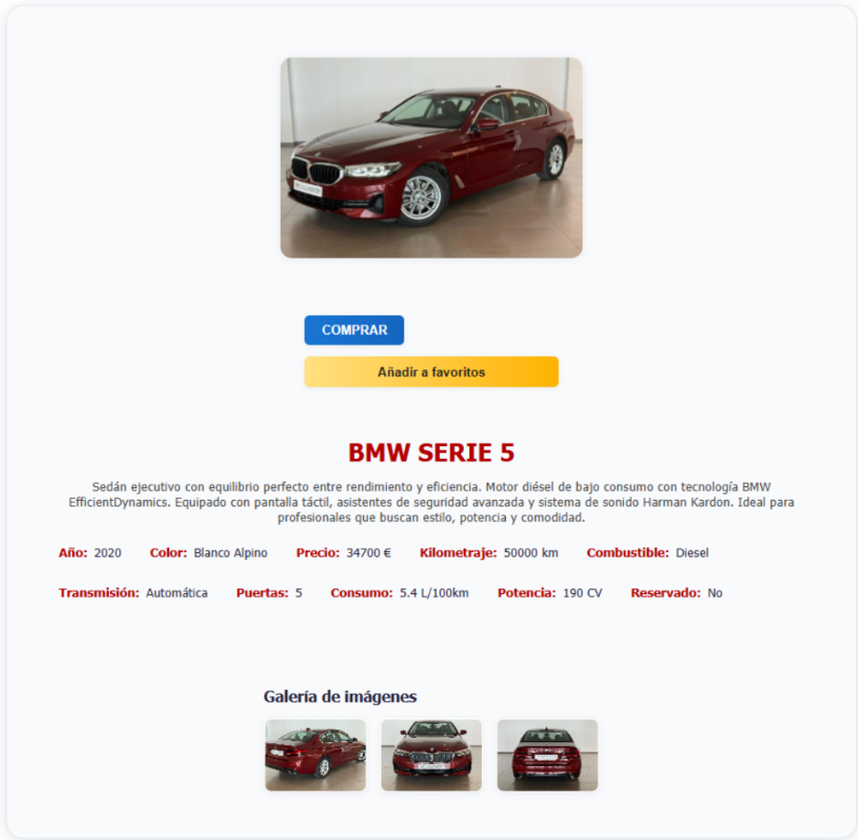

Manual de Usuario
Registro
Accede a la opción “Registrarse”, completa el formulario con nombre, email y contraseña. Recibirás un email de bienvenida.
Inicio de sesión
Accede a “Iniciar sesión”, introduce tus credenciales y accede a tu cuenta.

Navegación y búsqueda
Desde la pantalla principal, navega por el catálogo de vehículos.
Ver detalles
Haz clic en cualquier coche para ver su ficha completa, imágenes y características (se necesita haber iniciado sesión):
Gestión de favoritos
En la ficha, pulsa el icono de favorito para añadirlo a favoritos.
Accede a “Favoritos” en tu menú para ver y gestionar tus vehículos guardados.
Desde la lista de favoritos, puedes eliminar cualquier vehículo.

Comprar coche
Pulsa “Comprar”, sigue el proceso de pago.
Recibirás confirmación y factura por email.

Historial de compras
Consulta tu historial de compras y descarga facturas desde “Mis compras”.

Gestión del perfil
Accede a “Mi perfil” para modificar tus datos personales y fotografía.
Desde tu perfil, cambia tu contraseña de forma segura.
Panel de administración (solo administradores)
Si eres administrador, accede al panel desde el menú.
Añade o elimina vehículos del catálogo y consulta las ventas realizadas.
Estadísticas
Visualiza gráficos de ventas, ingresos, favoritos y usuarios activos.